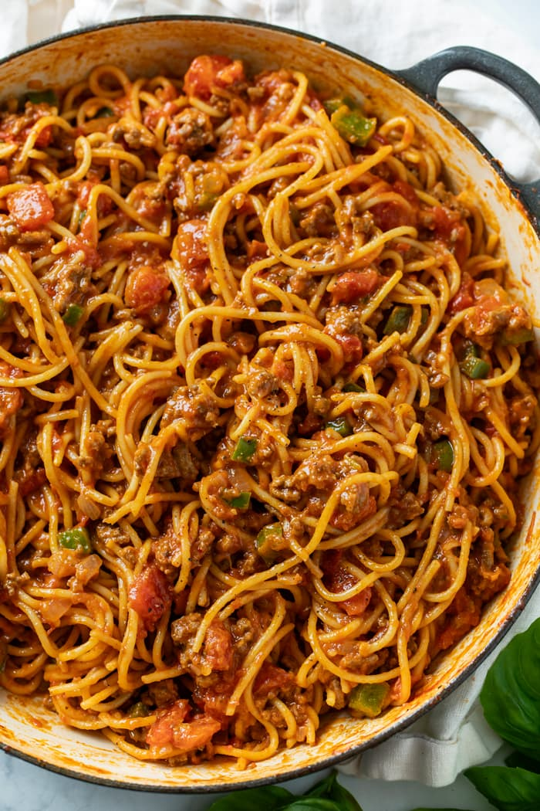

Spaghetti

Description
It's spaghetti. What more do you want!?
Ingredients
- 1 pound ground beef
- 1 small onion, diced
- 1 small bell pepper, diced
- 3 cloves garlic, minced
- 1/2 teaspoon garlic powder
- 1/2 teaspoon onion powder
- 1/2 teaspoon Italian seasoning
- Salt/Pepper to taste
- 2 1/2 cups chicken broth
- 14.5 oz. diced tomatoes, undrained
- 1/2 pound spaghetti, uncooked
- 24 oz. marinara sauce
- 2 tablespoons cream cheese, optional
Steps
- Cook and crumble the ground beef and onions over medium-high heat until nearly cooked through. Add the diced peppers, garlic, and seasonings during the last 2-3 minutes. Set aside on a separate plate and drain any grease.
- Add chicken broth to the pot and use a silicone spatula to “clean” the brown spots on the bottom. Bring the broth to a boil. Add the uncooked spaghetti noodles and use kitchen tongs to twist the noodles into the pot as they soften. Once softened, add the undrained diced tomatoes.
- Add the marinara sauce and softened cream cheese. Submerge the pasta underneath. Cover partially and simmer until cooked through, the pasta will take about 15-20 minutes total. Periodically run a silicone spatula along the bottom of the pot to ensure the pasta doesn’t stick.
- Add the meat back to the sauce and heat through. Serve with garlic bread with cheese.
Home